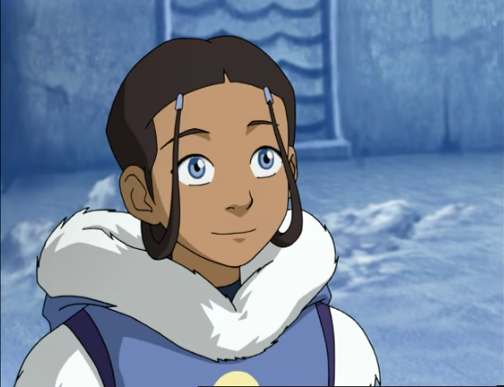
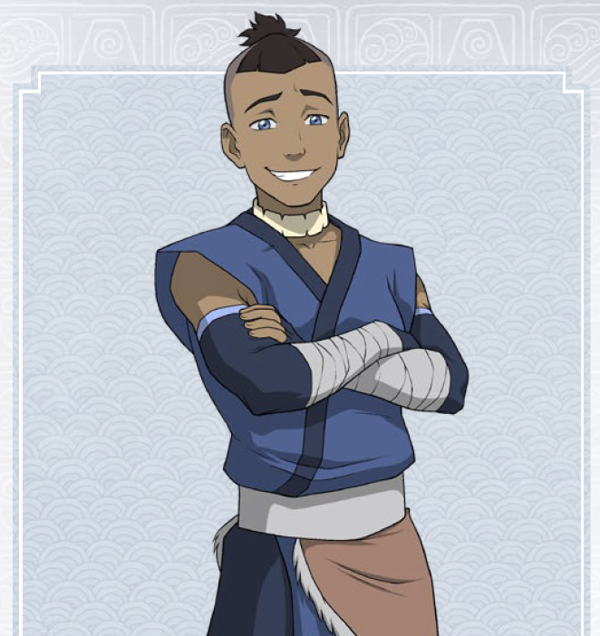

Water Tribe
The Water Tribe is one of the original four nations and its citizens primarily inhabit the northern and southernmost regions of the globe, near both poles. It is also a collective term for the nation of people who practice the art of waterbending. Many people of Water Tribe ethnicity also live in the United Republic and there is a small community of waterbenders that populate the Foggy Swamp in the Earth Kingdom, although they were isolated from their sister tribes for generations and others were largely unaware of their existence.
Although in the past the North and the South lived in harmony and there was significant exchange between the two tribes, contact between them was interrupted due to the chaos of the war. Though communication resumed afterward, tensions remained between the tribes and worsened after Unalaq's attempts to reimpose Northern control over the mostly autonomous south via a military occupation, which threw the Water Tribe into a brief civil war. However, after the events of Harmonic Convergence and Unalaq's subsequent defeat, the Northern troops withdrew and the Southern Water Tribe gained complete independence from the North, with Tonraq chosen as its new chief. The Water Tribe is less powerful than both the Earth Kingdom and the Fire Nation, due to its geographical location and the small size of its population and economy. The economy is dependent on the ocean, given the country's location and lack of arable land, apparent manufacturing capacity or minable resources.
Water Tribe Cast
|  | Katara: A 14 year-old Waterbending master from the Southern Water Tribe, best friend of Avatar Aang, and Sokka's younger sister. In the original series, Katara is known to be very caring and compassionate while also having a strong determination to stand up against systems of oppression and injustice. While she may have been a relatively inexperienced Waterbender at the start of the series, by the end of Book One Katara manages to claim the title of "Waterbending Master" surpassing the skillset of Avatar Aang. She possesses healing abilities, which she often uses to help her friends throughout the series. In addition to healing, Katara's abilities as a Waterbender range from temperature control, (turning water into ice shaped weapons such as spears, hooks, and blades as well as controlling steam) using streams of water to grab onto people and platforms, being able to manipulate the water in clouds, creating pockets of air in large bodies of water, being able to pull water from the air and plants. |
|  | Sokka: A 15-year-old warrior of the Southern Water Tribe, and Katara's older brother. With no bending power of his own, Sokka relies largely on a metallic boomerang, a blunt metal club, a machete, and later a black jian, or sword, created from the metals of a meteorite. Surprisingly in an inhabitant of a mystical world, Sokka is an engineer and something of a jack-of-all-trades, in which respect he is easily able to understand the Fire Nation's advanced technology, and perfects the design of the hot air balloon. In addition, he is both heterodox and resourceful in his endeavors,and a source of comic relief throughout the series. |